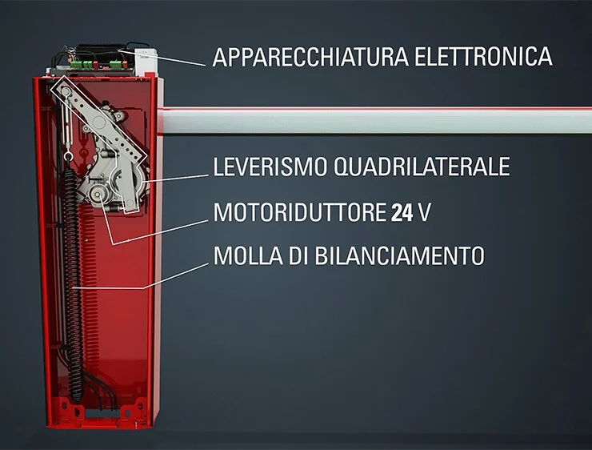
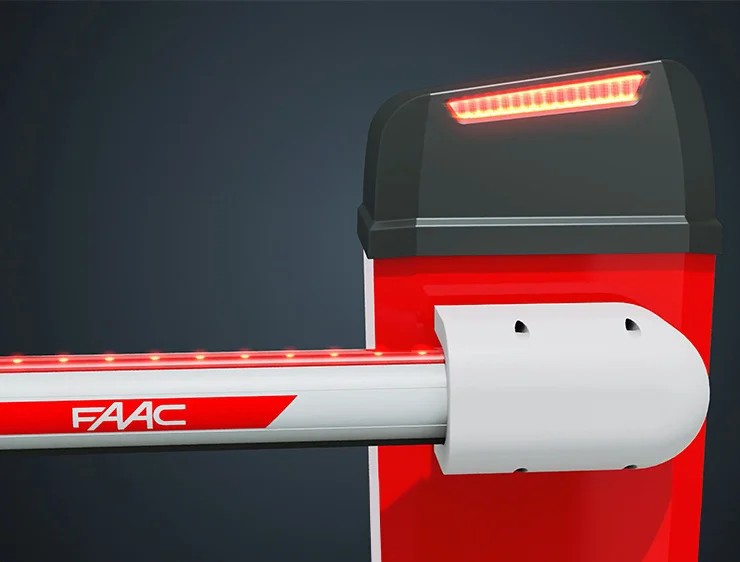

Barrera electromecanica para pasos hasta 5mts a 24v.
FAAC B614 è progettata per garantire la massima sicurezza durante il funzionamento, grazie al motore elettromeccanico con encoder integrato.
Questo sistema rileva con precisione eventuali ostacoli e attiva automaticamente l'inversione del movimento, proteggendo così veicoli e pedoni.
Puoi regolare la velocità di movimento della barriera in base alle esigenze specifiche del tuo spazio, che si tratti di un’area residenziale o commerciale.
Con un movimento fluido e controllato, la barriera automatica FAAC B614 ti assicura una gestione ottimale del traffico veicolare.
L'apparecchiatura elettronica, collocata nella parte superiore della barriera, offre un facile accesso per la programmazione e la manutenzione.
L’interfaccia intuitiva, inoltre, semplifica l’installazione e la gestione quotidiana, riducendo tempi e costi operativi.


La barriera automatica FAAC B614 è realizzata con materiali di alta qualità per la trasmissione del moto, garantendo un operatore robusto e affidabile.
Il sistema di leveraggio quadrilaterale con due stadi di riduzione assicura un movimento fluido e preciso, offrendo prestazioni eccellenti anche nelle condizioni più difficili.

Le aste della barriera FAAC B614, disponibili in versione tonda e rettangolare , sono dotate di un profilo in gomma antiurto per minimizzare l'impatto in caso di collisione.
Gli adesivi catarifrangenti e l’illuminazione a LED (opzionale) sull’intera lunghezza della sbarra garantiscono piena visibilità anche in condizioni di scarsa luminosità.
Per una gestione ancora più sicura del traffico veicolare, la barriera FAAC B614 può anche essere dotata di un lampeggiante semaforico integrato.
Información técnica